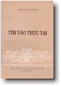

BuddhaSasana
Home Page
This document is written in Vietnamese, with Unicode
Times font
|  |
Viện Nghiên Cứu Phật Học Việt Nam Tìm Vào Thực TạiThích Chơn ThiệnSài gòn - 1997 |
Lời Nói ÐầuThiền định là con đường đi vào thực tại. Chứng ngộ của Phật giáo là chứng ngộ thực tại, là nhìn thấy thực tại đúng như thực tại. Sự nhìn thấy này phải thực hiện bằng con đường thiền định theo như truyền thống chứng ngộ của chư Phật. Do đó, việc nhận định và tu thiền đúng đắn là vô cùng cần thiết đối với người Phật tử. Cuốn sách nhỏ này là kết quả của việc tìm hiểu và thực hành thiền định Tứ Niệm Xứ của chúng tôi từ năm 1961 đến nay. Ðây là phương pháp thiền định của chính đức Bổn Sư Thích-ca Mâu-ni, được ghi chép rõ ràng qua các kinh Nikàya như kinh Niệm xứ (Satipatthàna, kinh thứ 10 của Trung bộ), kinh Ðại Niệm Xứ (Mahà Satipatthàna, kinh thứ 22 của Trường bộ). Phương pháp này đã được giảng giải, áp dụng cho các sinh viên học sinh và những người lớn tuổi theo đủ thành phần xã hội tại Ðại học Vạn Hạnh, tại các khóa thiền tại Thiền viện Vạn Hạnh và đã đạt được nhiều thành quả đáng khích lệ . Ðể giới thiệu với các bạn một số nét mới về thiền định và thực hành Thiền định, chúng tôi chia cuốn sách nhỏ này làm sáu chương, khởi đầu là những nhận thức cơ bản về thiền định Phật giáo, kế đến là phần thực hành thiền định Tứ Niệm Xứ. Dựa vào các kinh nguyên thủy, chúng tôi phân tích ý nghĩa của Thiền chỉ và Thiền quán, đặc biệt là đối tượng Thiền quán. Tiếp đến, chúng tôi sơ phác con đường tu tập của đức Thế Tôn bằng thiền định Tứ Niệm Xứ qua các cấp độ, cảnh giới Thiền và sự chứng ngộ giải thoát tối hậu của ngài như là một kết quả tất yếu của một sự thực hành đúng đắn. Chúng tôi cũng giới thiệu một thể cách triển khai giáo lý và thực hành thiền Tứ Niệm Xứ của ngày Buddhaghosa (Phật Âm) qua tác phẩm Visuddhimagga (Con Ðường Thanh Tịnh), đặc biệt là bảy cấp độ thanh tịnh được nêu trong đó. Một chương nhỏ (Chương V) cũng được dành riêng để nêu bật đặc trưng của Thiền định Phật giáo, khác với những Thiền định ngoại đạo khác. Chương VI là một cái nhìn khái quát về Thiền định Phật giáo Việt Nam, một triển khai từ Thiền định của đức Phật với những đặc thù của đất nước và con người Việt Nam, đầy tính dân tộc, phong phú, tích cực trong một vẻ hiền hòa, đầy đạo vị. Trong chương cuối cùng chúng tôi trình bày đôi nét về Thiền Tổ sư hay Thiền Công án của Trung Hoa, một phát triển độc đáo, sinh động từ giáo lý của đức Bổn Sư, dung hợp với triết lý, với bối cảnh và tâm hồn người Trung Hoa; tuy phong phú đặc sắc nhưng cũng có thể gây nhiều bối rối và ngộ nhận. Sau cùng, để độc giả tiện việc tra cứu, phần phụ lục là bản kinh Tứ niệm xứ (Satipatthàna Sutta), được dịch từ nguyên bản Pàli, có đối chiếu với các bản dịch Anh ngữ khác như của Pàli Text Society và của một số học giả khác. Cố gắng giới thiệu con đường Niệm Xứ mà đức Phật dạy là Con Ðường Ðộc Nhất (ekàyano maggo), chúng tôi hy vọng cuốn sách nhỏ này, trong một chừng mực nào đó, giúp ít cho độc giả, nhất là cho những người đang tìm đường vào thực tại, vào chứng ngộ, giải thoát. Thích
Chơn Thiện (Chân thành cám ơn anh HDC đã có thiện tâm giúp tổ chức đánh máy vi tính -- B. Anson, 10-2000). -oOo- |
update:30-10-2000